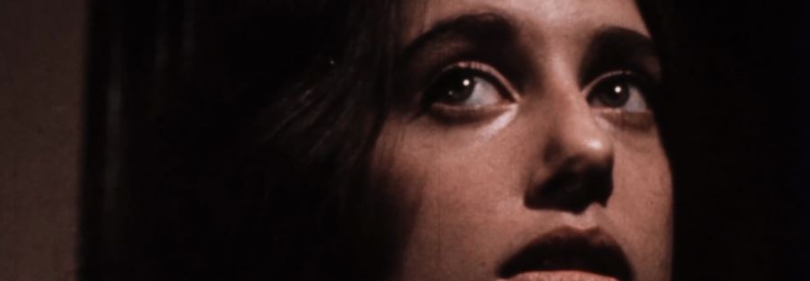

MAKE A FACE (1971) with filmmaker Karen Sperling
MAKE A FACE (Karen Sperling, 1971, 90 min, DCP) – New digital transfer!
In New York in the fall of 1969, writer-producer Karen Sperling and writer-director Avraham Tau began shooting MAKE A FACE, a 35mm feature in which Sperling would play the leading role of Nina, a young artist plagued by hallucinations of a handsome intruder. Sperling and Tau’s creative visions quickly diverged, and the 25-year-old Sperling took the reins of the production, which was filmed largely inside her own Dakota building apartment. What emerged is a defiantly dissociative psychodrama, in which a woman confronts vague intimations of violence and exploitation against a backdrop of cultural collapse. Though Sperling is the granddaughter of movie mogul Harry Warner, MAKE A FACE rejects Hollywood models of narrative cohesion and realism. Instead, the film makes boldly expressive use of production design, split-screens, and superimpositions to realize a subjective vision of cinema in which a character’s dreams, fantasies, and daily realities have equal weight.
Released in 1971 and briefly self-distributed, MAKE A FACE disappeared from film history in the mid-70s after Sperling moved on to other life pursuits. Over the decades, the original 35mm prints and negatives were lost and discarded, leaving only video transfers and a single 16mm reduction print extant. Working with Karen Sperling, Block Cinema has created a new digital transfer of the last remaining film print, which will screen for the first time in five decades.
Filmmaker Karen Sperling in attendance for a post-screening conversation.